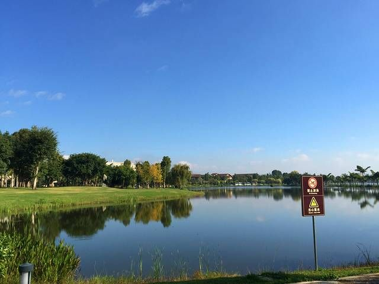
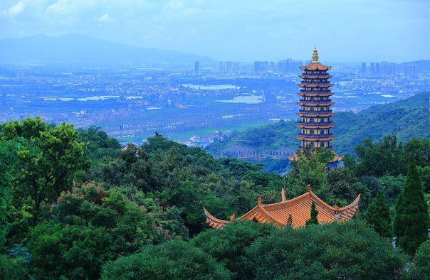

先看结论
-
城市定位
- 弥勒属于云南红河州，最适合做昆明周边 1-2 天短途，也适合和建水、蒙自、元阳、普者黑串成滇东南线
- 核心体验不是“大景区打满”，而是红砖艺术、湖景温泉、花海森林、彝族村寨、葡萄酒庄和卤鸡米线
- 从昆明南坐动车到弥勒常见约 30-50 分钟，弥勒站到东风韵和云南红酒庄很近，市区到湖泉生态园、红河水乡、锦屏山更方便
-
第一梯队
- 东风韵景区弥勒最强名片，红砖建筑、万花筒艺术馆、半朵云、花海、夜游和旅拍都集中在这里
- 湖泉生态园和湖泉半山温泉弥勒康养感核心，白天湖边散步，晚上泡温泉
- 太平湖森林公园花海、森林、石漠化景观、木屋度假和亲子/露营项目
- 可邑小镇阿细跳月、彝族古村、密枝山、虎啸山林、彝族博物馆
- 锦屏山风景区弥勒大佛、弥勒寺、登高看城，适合半天
- 红河水乡市区夜景、水舞秀、糖街夜市和餐饮散步
- 云南红酒庄和东风葡萄片区葡萄酒文化、地下酒窖、葡萄园和伴手礼
-
适合安排
- 只有半天东风韵；或湖泉生态园加红河水乡夜景
- 1 天东风韵、云南红酒庄、湖泉生态园、半山温泉
- 2 天东风韵、太平湖、可邑小镇、锦屏山、红河水乡、湖泉半山温泉
- 3 天以上加建水古城、蚁工坊、朱家花园、团山村、蒙自碧色寨或元阳梯田
-
必吃优先级
- 第一口卤鸡米线，尤其竹园卤鸡、马氏卤鸡一类本地高频店
- 正餐羊汤锅、红酒鸡翅、红酒牛肉、野生菌火锅、彝家菜
- 小吃烤豆腐、卷粉、凉米线、烧烤、木瓜水、冰粉
- 伴手礼云南红葡萄酒、东风葡萄、竹园红糖、竹园卤鸡真空装、鲜花饼
快速决策索引
- 按时间选
- 按主题选
- 按季节选
- 按取舍选
全年月份速查
季节限定景观
景点营业时间和票价速查
-
使用说明
- 以下为 2026 年 5 月前后公开平台常见信息和官方/文旅信息整理，节假日、夜游、演出、观光车、套票会变化
- 开放式街区、公园、湖边、夜市统一按“开放式/免费/以店铺或项目为准”
- 出发前优先复核景区官方公众号、携程/同程/去哪儿购票页、本地文旅公告
-
东风韵景区
- 常见时间日场常见 08:30-18:00，停止入园约 17:45；夜游开放日可到 22:00，停止入园约 21:45
- 常见票价成人票常见约 80 元，观光车/夜游/演出票另计，以购票平台为准
- 预约方式线上购票或现场购票，节假日建议提前
-
湖泉生态园
- 常见时间开放式公园，全年全天开放或按园区现场管理
- 常见票价湖边散步通常免费；温泉、水世界、酒店、停车和项目另计
- 预约方式公园不用预约，温泉/酒店提前订
-
湖泉半山温泉
- 常见时间全年常见 09:00-次日 00:00 或 09:00-23:00，换票和入园时间以当天票务为准
- 常见票价成人温泉票平台常见约 148-168 元，含餐套票约 200 元上下浮动
- 预约方式线上购票/酒店套餐，周末和冬季建议提前
-
太平湖森林公园
- 常见时间白天游览为主，常见约 08:30-17:30 或按项目开放
- 常见票价门票、花海小火车、观光车、露营/水上/亲子项目组合浮动，部分外围花海可开放式打卡
- 预约方式线上购票或现场，项目票按当天售卖为准
-
可邑小镇
- 常见时间常见 08:30-18:00，停止售票/入园约 17:00；部分平台显示 09:00-18:00
- 常见票价门票和观光车/讲解/表演组合浮动，村寨外围和部分开放区域可能免费，以售票处为准
- 预约方式现场或线上购票，节假日看表演场次
-
锦屏山风景区
- 常见时间常见 08:00-18:00，电子票使用时间常见 08:00-17:45；特殊节日另行公告
- 常见票价成人票常见约 30 元，门票加双程摆渡车常见约 50 元
- 预约方式线上或现场购票，登台阶量力而行
-
红河水乡
- 常见时间开放式街区，白天可逛，傍晚和夜间更适合
- 常见票价开放式/免费，以餐饮、夜市、停车、演出或商户消费为准
- 预约方式不常规预约；水舞秀、节庆活动以官方公告为准
-
云南红酒庄
- 常见时间常见 09:00-17:30
- 常见票价票价和品鉴/讲解/购物抵扣政策以酒庄和平台为准，历史平台价有百元级产品
- 预约方式团队讲解和品鉴建议提前电话或平台确认
-
弥勒市博物馆
- 常见时间公共文化馆常见周二至周日白天开放，周一闭馆；以馆方公告为准
- 常见票价一般免费或预约参观，以馆方公告为准
- 预约方式看官方公众号/现场公告
-
甸溪河湿地公园
- 常见时间开放式湿地/公园，以现场管理为准
- 常见票价开放式/免费，项目另计
- 预约方式无需常规预约
-
竹园镇和卤鸡米线店
- 常见时间镇区开放式，卤鸡米线多为早餐到午间更稳
- 常见票价开放式/免费，以餐饮消费为准
- 预约方式热门店早去，卖完可能收摊
-
建水蚁工坊
- 常见时间红河州建水延伸点，不在弥勒市；开放时间和票价以建水当地景区为准
- 常见票价常见门票/项目票组合，以平台为准
- 预约方式适合弥勒后续接建水时安排
行前准备
-
预约和复核
- 东风韵复核日场、夜游、水舞秀、观光车和万花筒区域开放
- 湖泉半山温泉确认票型、入园时间、是否含餐、是否可二次入园、儿童政策
- 太平湖确认花海状态、观光车/小火车/露营/亲子项目是否开放
- 可邑小镇确认阿细跳月表演、观光车、讲解和停车
- 红河水乡确认水舞秀和夜市活动是否正常
-
装备
- 全年防晒、帽子、墨镜、舒适鞋、充电宝
- 温泉泳衣、手机防水袋、换洗衣物，酒店不一定提供合身泳衣
- 雨季雨具、防滑鞋，户外项目预留备用室内方案
- 拍照东风韵红砖适合白色、黑色、牛仔、民族风或低饱和服装
-
出行原则
- 弥勒景点分散，打车/自驾/包车效率明显高于纯公交
- 高铁到达当天适合先去东风韵和云南红酒庄，再进城泡温泉
- 如果主打太平湖和可邑，建议包车或自驾，减少等车时间
住宿建议
-
湖泉生态园/湖泉酒店/温泉路片区
- 适合第一次来、想泡温泉、想看湖景、带老人或亲子
- 优点湖边散步舒服，半山温泉和市区吃喝都方便
- 缺点热门酒店周末涨价，温泉不一定包含在房价内
- 关键词湖泉生态园、湖泉酒店、温泉路、冉翁西路
-
红河水乡/市中心片区
- 适合吃夜市、看夜景、交通方便、预算型住宿
- 优点餐饮选择多，打车去锦屏山、湖泉生态园方便
- 缺点度假感不如湖泉片区
- 关键词红河水乡、糖街、髯翁路、人民路、佛城商都
-
东风韵/弥勒站/东风片区
- 适合主要拍东风韵、赶高铁、想住艺术酒店或旅拍
- 优点离东风韵、云南红酒庄、弥勒站近
- 缺点离市区夜宵和湖泉温泉有距离
- 关键词东风韵、美憬阁、弥勒站、葡萄观光大道
-
太平湖度假区
- 适合亲子、露营、森林度假、想慢住
- 优点环境开阔，适合度假
- 缺点吃喝和夜生活少，适合自驾
-
可邑小镇/西三镇民宿
- 适合民族文化、乡村慢住、避开市区
- 优点安静，有村寨和森林氛围
- 缺点交通和餐饮选择少，不适合赶行程
地图分区
-
东风韵和东风葡萄片区
- 核心点东风韵景区、万花筒、半朵云、云南红酒庄、东风葡萄园、弥勒站
- 玩法红砖艺术拍照、夜游、红酒文化、葡萄采摘/购买
- 适合搭配高铁到达或离开当天
-
湖泉和市区片区
- 核心点湖泉生态园、湖泉半山温泉、红河水乡、糖街、佛城商都、弥勒市博物馆
- 玩法湖边散步、泡温泉、夜市、小吃、雨天室内
- 适合搭配住宿和夜间活动
-
太平湖片区
- 核心点太平湖森林公园、花海、森林木屋、石漠化景观、露营项目
- 玩法花海拍照、森林度假、亲子、湖景
- 适合搭配自驾/包车半天到一天
-
可邑和西三镇片区
- 核心点可邑小镇、密枝山、虎啸山林、可邑古村、彝族博物馆
- 玩法民族文化、阿细跳月、森林步道、彝家菜
- 适合搭配锦屏山同日，或作为第二天半日线
-
锦屏山和城北片区
- 核心点锦屏山风景区、弥勒寺、弥勒大佛、甸溪河湿地
- 玩法登高、祈福、俯瞰城市、轻户外
- 适合搭配市区住宿、可邑小镇或红河水乡
-
竹园镇和卤鸡片区
- 核心点竹园卤鸡、卤鸡米线、竹园红糖、乡镇集市
- 玩法早餐/午餐专线，适合自驾顺路
- 适合搭配红河州南线或返程采购
核心景点
-
东风韵景区
- 介绍以葡萄文化、自然风光、人文旅游和艺术创意为核心的 4A 级文旅综合体，红砖建筑是弥勒最有识别度的画面
- 最佳时间3-5 月、9-11 月；晴天上午和傍晚最适合拍照
- 看点万花筒艺术馆、半朵云、花海、红砖建筑群、星空剧场、夜游灯光
- 搭配路线弥勒站、东风韵、云南红酒庄、市区湖泉半山温泉
- 是否值得专程去值得，是弥勒第一梯队
- 营业时间日场常见 08:30-18:00，夜游开放日延长至 22:00 左右
- 票价/预约方式成人票常见约 80 元，观光车和夜游另计；线上购票更稳
- 游玩提醒核心拍照点人多，想避人要早到；景区内吃饭选择有限，建议进出前后在市区吃
-

来源图 湖泉生态园游玩攻略最佳时间：全年，傍晚最舒服；看点：湖景步道、草坪、湿地、日落、湖泉酒店群- 介绍弥勒市区湖景和休闲核心，适合散步、骑行、看日落和衔接温泉
- 最佳时间全年，傍晚最舒服
- 看点湖景步道、草坪、湿地、日落、湖泉酒店群
- 搭配路线湖泉生态园、半山温泉、红河水乡夜景
- 是否值得专程去值得，尤其住在市区或湖泉片区
- 营业时间开放式公园，全年全天或按现场管理
- 票价/预约方式湖边散步免费，温泉/酒店/项目另计
- 游玩提醒不要把湖泉生态园和半山温泉票混为一谈，前者是湖边公园，后者是付费温泉
-
湖泉半山温泉
- 介绍弥勒温泉体验代表，山间露天泡池和酒店度假感强
- 最佳时间11 月至次年 3 月，雨天和夜间也适合
- 看点半山露天泡池、湖景、休息区、酒店套餐
- 搭配路线白天东风韵/太平湖，晚上半山温泉
- 是否值得专程去喜欢温泉值得；不泡温泉可跳过
- 营业时间常见 09:00-次日 00:00 或 09:00-23:00
- 票价/预约方式成人票常见约 148-168 元，含餐套票更高；线上提前买
- 游玩提醒周末和冬季人多，晚上动线可能复杂，带老人小孩注意集合点和更衣区位置
-
太平湖森林公园
- 介绍以太平湖、森林、花海、石漠化景观和度假项目为核心的生态旅游区
- 最佳时间2-4 月花海，5-10 月森林湖景
- 看点花海、湖景、森林木屋、石漠化景观、露营和亲子项目
- 搭配路线太平湖、可邑小镇、红河水乡；或太平湖、湖泉半山温泉
- 是否值得专程去有 2 天值得；只有 1 天可二选一东风韵和太平湖
- 营业时间白天游览为主，项目以当天开放为准
- 票价/预约方式门票、小火车、观光车和项目组合浮动，线上平台复核
- 游玩提醒园区大，不要低估步行距离；无车游客建议包车或提前查专线
-
可邑小镇
- 介绍阿细文化代表村寨，集喀斯特地貌、彝族文化、民俗风情于一体，阿细跳月是核心符号
- 最佳时间3-5 月、10-11 月，夏季避暑也适合
- 看点寨门、密枝山、虎啸山林、可邑古村、彝族博物馆、阿细跳月表演
- 搭配路线锦屏山、可邑小镇、红河水乡
- 是否值得专程去喜欢民族文化值得；纯拍照游客优先级低于东风韵
- 营业时间常见 08:30-18:00，停止入园约 17:00
- 票价/预约方式门票/观光车/讲解/表演组合浮动，现场或线上购票
- 游玩提醒表演场次不稳定，建议提前确认；不要把村民生活区当布景随意打扰
-

来源图 锦屏山风景区游玩攻略介绍：城北佛教文化和登高点，弥勒寺、弥勒大佛和台阶路线是主要体验；最佳时间：全年晴天上午或傍晚，夏天避开正午- 介绍城北佛教文化和登高点，弥勒寺、弥勒大佛和台阶路线是主要体验
- 最佳时间全年晴天上午或傍晚，夏天避开正午
- 看点弥勒大佛、弥勒寺、1999 级台阶、城景远眺
- 搭配路线锦屏山、可邑小镇、红河水乡夜景
- 是否值得专程去有半天值得，体力一般可坐摆渡车
- 营业时间常见 08:00-18:00
- 票价/预约方式成人票常见约 30 元，摆渡车另计或套票约 50 元
- 游玩提醒台阶多，雨天防滑；寺庙区域保持安静
-
红河水乡
- 介绍弥勒市区开放式水景街区，以仿古建筑、夜景、水舞秀、餐饮和糖街夜市为主
- 最佳时间傍晚到夜间
- 看点水舞秀、钱王门楼、钱王阁、糖街夜市、湖边建筑群
- 搭配路线湖泉生态园、红河水乡、夜宵
- 是否值得专程去晚上值得，白天优先级一般
- 营业时间开放式街区，水舞秀和店铺以当天公告为准
- 票价/预约方式开放式/免费，以餐饮和活动消费为准
- 游玩提醒水舞秀不保证每天有，先查再去；节假日停车拥挤
-
云南红酒庄
- 介绍位于东风葡萄片区，是了解云南红葡萄酒、地下酒窖和葡萄酒产业的代表点
- 最佳时间8-10 月葡萄季，全年可参观酒庄
- 看点葡萄园、酒窖、酒文化展示、品鉴和伴手礼
- 搭配路线东风韵、云南红酒庄、弥勒站
- 是否值得专程去顺路值得，单独专程看个人对葡萄酒兴趣
- 营业时间常见 09:00-17:30
- 票价/预约方式门票、讲解、品鉴和抵扣政策以酒庄/平台为准
- 游玩提醒参观和购物容易绑定，先确认是否有讲解和自由参观时间
-
甸溪河湿地公园
- 介绍市区生态湿地和散步补充点，适合不赶行程时散步
- 最佳时间傍晚或清晨
- 看点湿地、步道、城市水景
- 搭配路线锦屏山或红河水乡
- 是否值得专程去不必专程，住附近顺路即可
- 营业时间开放式，以现场管理为准
- 票价/预约方式开放式/免费
- 游玩提醒雨后步道防滑，夜间注意照明
街区/夜市/市场
-
红河水乡和糖街夜市
- 类型夜景、夜市、餐饮街区
- 适合时间18:30 后
- 可吃烧烤、米线、饮品、甜品、小吃、地方菜
- 代表店铺红河水乡片区的马氏卤鸡、米线店、烧烤摊和咖啡/茶饮店
- 排队/避坑提醒夜市摊位流动大，看明码标价；水舞秀场次先查
-
佛城商都/人民路/髯翁路周边
- 类型市中心吃喝、商圈、住宿补给
- 适合时间午餐、晚餐、夜宵
- 可吃卤鸡米线、羊汤锅、烧烤、卷粉、饮品
- 代表店铺本地老卤鸡米线店、羊汤锅店、烧烤店
- 排队/避坑提醒按住宿附近选择即可，不必为了单店横穿城市
-
湖泉生态园周边
- 类型湖景散步、酒店餐饮、温泉补给
- 适合时间下午到晚上
- 可吃酒店餐、湖边咖啡、米线、简餐
- 代表店铺湖泉酒店餐饮、温泉路周边本地餐馆
- 排队/避坑提醒景观位价格更高，重点看日落和散步氛围
-
竹园镇
- 类型卤鸡、米线、红糖、乡镇风味
- 适合时间早餐到午餐
- 可吃竹园卤鸡、卤鸡米线、竹园红糖、乡镇小吃
- 代表店铺竹园老字号卤鸡、竹园卤鸡米线店
- 排队/避坑提醒卖完收摊常见，想吃卤鸡米线尽量上午去
-
可邑小镇农家乐和彝家菜
- 类型村寨餐饮、民族风味
- 适合时间午餐
- 可吃彝家菜、土鸡、腊肉、野菜、玉米饭
- 代表店铺可邑村内农家乐和景区餐饮点
- 排队/避坑提醒团队餐和散客餐体验差异大，提前问清菜价和份量
美食总表
-
特色菜
-
羊汤锅
- 介绍弥勒传统风味美食，鲜汤锅底加羊肉和蔬菜，冬天、雨天和多人正餐很适合
- 代表店铺市区老羊汤锅店、湖泉/红河水乡附近羊汤锅餐馆
- 适合时间午餐、晚餐、冬季
- 排队/避坑提醒按斤计价时问清肉量、锅底、蘸水和配菜是否另收
-
红酒鸡翅、红酒牛肉
- 介绍东风葡萄酒和地方餐饮结合的风味菜，适合搭配云南红酒庄/东风韵线
- 代表店铺云南红酒庄餐饮、东风片区酒庄餐、弥勒本地云南菜馆
- 适合时间午餐、晚餐
- 排队/避坑提醒不要只看“红酒”噱头，先看评价和菜单
-
野生菌火锅
- 介绍云南雨季高频正餐，菌香强但安全更重要
- 代表店铺市区菌火锅店、云南菜馆
- 适合时间6-9 月
- 排队/避坑提醒必须煮熟，别催锅；不认识的菌不乱吃
-
彝家菜
- 介绍可邑小镇和西三镇周边更适合，土鸡、腊肉、野菜、玉米饭常见
- 代表店铺可邑农家乐、彝家餐馆
- 适合时间可邑半日线午餐
- 排队/避坑提醒问清是不是团餐菜单
-
羊汤锅
-
小吃主食
-
卤鸡米线
- 介绍弥勒早餐第一梯队，卤鸡香、米线滑，很多本地人的一天从一碗卤鸡米线开始
- 代表店铺马氏卤鸡、竹园卤鸡米线、沈卫国卤鸡米线、红河水乡/人民路周边卤鸡店
- 适合时间早餐到午餐
- 排队/避坑提醒热门店上午更稳，卤鸡可单点或打包
-
羊肉米线/牛肉米线
- 介绍比卤鸡米线更适合爱喝汤的人，早午餐方便
- 代表店铺市区粉面店、羊汤锅店早餐档
- 适合时间早餐、午餐
- 排队/避坑提醒问清辣度和加肉价格
-
卷粉、凉米线、烤豆腐
- 介绍夏天和夜市友好，适合少量多样吃
- 代表店铺红河水乡夜市、佛城商都周边小吃、糖街摊位
- 适合时间下午、夜宵
- 排队/避坑提醒看卫生和调料新鲜度
-
卤鸡米线
-
饮品甜品
-
木瓜水、冰粉、凉品
- 介绍云南常见解辣甜品，适合吃完羊汤锅、烧烤后
- 代表店铺夜市甜品摊、红河水乡小吃摊
- 适合时间下午、夜宵
- 排队/避坑提醒现做比预装更好
-
咖啡和茶饮
- 介绍东风韵、红河水乡和湖泉周边都有适合休息的咖啡/茶饮
- 代表店铺东风韵咖啡店、红河水乡咖啡/奶茶、湖泉湖边咖啡
- 适合时间下午
- 排队/避坑提醒景区咖啡主要买位置和氛围，口味预期放平
-
木瓜水、冰粉、凉品
-
夜市
-
红河水乡糖街夜市
- 代表吃法烧烤、米线、烤豆腐、凉品、饮品
- 适合时间晚饭后
- 排队/避坑提醒先逛一圈再买，避免第一摊买太多
-
市中心烧烤和夜宵
- 代表吃法烧烤、烤豆腐、卷粉、米线、冰粉
- 适合时间21:00 后
- 排队/避坑提醒问价、看串数、看是否明码标价
-
红河水乡糖街夜市
-
农贸市场
-
市区农贸市场
- 代表内容水果、米线配料、本地蔬菜、卤味、红糖
- 适合时间上午
- 排队/避坑提醒只买当天能吃完或能妥善携带的
-
竹园镇市场
- 代表内容卤鸡、竹园红糖、乡镇小吃
- 适合时间上午
- 排队/避坑提醒真空打包要问保质期和是否可冷藏
-
市区农贸市场
-
伴手礼
-
云南红葡萄酒
- 代表购买云南红酒庄、东风葡萄片区、正规商超
- 提醒看酒标、年份、容量、托运方式
-
竹园红糖
- 代表购买竹园镇、商超、土特产店
- 提醒看生产日期和包装完整度
-
竹园卤鸡
- 代表购买竹园卤鸡店、卤鸡米线店
- 提醒短途可打包，长途注意保鲜
-
鲜花饼、葡萄、红河土特产
- 代表购买商超、红河水乡土特产店、景区店
- 提醒景区价格高，先试味再买
-
云南红葡萄酒
餐厅和店铺
-
马氏卤鸡
- 类型卤鸡米线、卤鸡打包
- 适合时间早餐、午餐
- 推荐吃法卤鸡米线加卤鸡拼盘，能吃辣再加蘸水
- 提醒本地和游客都高频，分店多，以就近营业为准
-
竹园老字号卤鸡/竹园卤鸡米线
- 类型乡镇卤鸡、米线、伴手礼
- 适合时间上午
- 推荐吃法卤鸡米线、卤鸡打包、竹园红糖
- 提醒适合自驾顺路；专门打车去要评估往返成本
-
沈卫国卤鸡米线
- 类型卤鸡米线
- 适合时间早餐、午餐
- 推荐吃法卤鸡米线、卤鸡单加
- 提醒按当天营业和排队情况决定，不必执着单店
-
老弥勒羊汤锅/市区羊汤锅老店
- 类型羊汤锅、羊肉米线
- 适合时间午餐、晚餐
- 推荐吃法清汤羊肉加蘸水、时蔬、米饭或米线
- 提醒问清计价方式，少人数点小份
-
云南红酒庄餐饮
- 类型红酒主题餐、葡萄酒品鉴
- 适合时间东风韵同日午餐或下午
- 推荐吃法红酒鸡翅、红酒牛肉、葡萄酒试饮
- 提醒重点是体验，口味和性价比看当天套餐
-
可邑小镇农家乐
- 类型彝家菜、土鸡、腊肉、野菜
- 适合时间可邑线午餐
- 推荐吃法土鸡、腊肉、野菜、玉米饭
- 提醒先看菜单和人均，避免被安排团餐
-
红河水乡夜市摊位
- 类型烧烤、小吃、甜品、饮品
- 适合时间夜间
- 推荐吃法烤豆腐、卷粉、烧烤、木瓜水
- 提醒少量多样，先问价
博物馆和展馆
-
弥勒市博物馆
- 介绍了解弥勒历史、红河地方文化和城市发展的室内补充点
- 最佳时间雨天、午后、亲子
- 看点地方历史、民族文化、城市展陈
- 搭配路线红河水乡、湖泉生态园、市区吃喝
- 是否值得专程去雨天值得，晴天优先景区
- 营业时间以馆方公告为准，公共文化馆常见周一闭馆
- 票价/预约方式多为免费或预约参观，以现场公告为准
- 游玩提醒闭馆和临展变化大，出发前查公告
-
可邑彝族博物馆
- 介绍可邑小镇内了解阿细文化、彝族服饰、乐器和民俗的核心展馆
- 最佳时间可邑小镇同日
- 看点彝族文化、阿细跳月、村寨生活
- 搭配路线可邑古村、密枝山、虎啸山林
- 是否值得专程去到可邑就值得顺路看
- 营业时间随可邑小镇开放
- 票价/预约方式含在景区票或按现场政策执行
- 游玩提醒配合讲解会更好理解
-
东风韵艺术展馆/万花筒艺术馆
- 介绍东风韵红砖建筑和艺术展陈核心
- 最佳时间晴天上午或傍晚
- 看点建筑空间、艺术装置、红砖结构
- 搭配路线东风韵花海、云南红酒庄
- 是否值得专程去值得
- 营业时间随东风韵景区开放
- 票价/预约方式随景区票/项目政策
- 游玩提醒热门机位排队，避开正午强光
-
云南红酒庄酒文化展区
- 介绍了解弥勒葡萄酒产业、地下酒窖和葡萄酒酿造
- 最佳时间东风韵同日顺路
- 看点酒窖、葡萄酒展示、品鉴
- 搭配路线东风韵、弥勒站
- 是否值得专程去顺路值得
- 营业时间常见 09:00-17:30
- 票价/预约方式以酒庄平台和现场为准
- 游玩提醒讲解质量会影响体验，提前确认是否有讲解
自然/远郊/周边
-
太平湖森林公园
- 定位弥勒自然和亲子第一梯队
- 适合季节春季花海、夏秋森林湖景
- 玩法花海、湖景、石漠化景观、露营、森林木屋
- 提醒最好自驾或包车，不要把所有项目都硬塞半天
-
可邑小镇和西三镇
- 定位民族文化和轻户外
- 适合季节春秋最佳，夏季避暑
- 玩法阿细跳月、村寨、森林步道、彝家菜
- 提醒看表演和讲解比单纯拍照更有价值
-
竹园镇
- 定位卤鸡和乡镇美食
- 适合季节全年，上午更好
- 玩法吃卤鸡米线、买竹园红糖、打包卤鸡
- 提醒离市区有距离，适合自驾顺路，不建议只为一碗米线高成本往返
-
建水古城/蚁工坊/朱家花园
- 定位红河州延伸，不属于弥勒市区
- 适合季节全年，春秋更舒服
- 玩法古城、紫陶、蚁工坊、朱家花园、小火车、团山村
- 提醒建议至少 1 天，和弥勒合成 3-4 天滇东南线
-
蒙自碧色寨和过桥米线
- 定位红河州延伸，高铁可达
- 适合季节全年
- 玩法碧色寨、南湖、过桥米线
- 提醒适合弥勒后续顺路，不建议弥勒 1 天内硬塞
-
元阳梯田
- 定位红河州远郊摄影和梯田景观
- 适合季节11 月至次年 4 月水田期
- 玩法多依树日出、坝达日落、阿者科村
- 提醒路途远，至少 2 天 1 晚，天气决定体验
路线模板
交通细节
-
外部交通
- 高铁昆明南到弥勒动车班次多，常见车程约 30-50 分钟；具体以 12306 当天时刻为准
- 自驾昆明到弥勒通常约 2 小时上下，节假日看高速拥堵
- 滇东南串线弥勒可接建水、蒙自、元阳、普者黑，适合 3-7 天
-
弥勒站到景点
- 弥勒站到东风韵距离近，打车最省心，也可看高铁专线/东风专线
- 弥勒站到市区湖泉约 10 公里级别，打车或公交高铁专线
- 弥勒站到太平湖/可邑不建议临时等车，提前查专线或包车
-
市区交通
- 打车市区点位之间相对方便，去东风韵、太平湖、可邑、锦屏山按距离计价
- 公交弥勒有高铁专线和部分旅游/城市公交通往东风韵、太平湖、可邑、锦屏山等方向，但班次和末班会变
- 自驾最适合太平湖、可邑、竹园镇和红河州延伸线
- 停车东风韵、太平湖、红河水乡、湖泉片区节假日会拥堵，尽量早到
-
实用组合
- 高铁当天弥勒站、东风韵、云南红酒庄、市区住宿
- 无车 1 天东风韵打车往返，晚上湖泉/红河水乡
- 自驾 2 天东风韵、湖泉；太平湖、可邑、锦屏山
避坑和取舍
-
东风韵
- 不要只为一张图排很久，景区本身适合慢走和换角度拍
- 不爱拍照的人可压缩到 2 小时，把时间给温泉和美食
- 夜游不是每天都有，别到现场才发现未开放
-
湖泉半山温泉
- 看清票型是否含餐、儿童票、老人票和入园时段
- 温泉区动线可能绕，带老人小孩提前约好集合点
- 冬季周末人多，想清净选工作日或早场
-
太平湖
- 园区大，项目分散，半天只能选重点
- 花海状态有季节性，不要只看网图
- 无车游客提前规划返程，不要临时等末班
-
可邑小镇
- 价值在阿细文化和村寨，不是纯网红打卡
- 表演和讲解看场次，散客体验可能不如团客完整
- 购物和特产按需，别被“必须买”影响心情
-
红河水乡
- 白天不如夜晚，建议晚饭后去
- 水舞秀会因维护、天气和活动调整，不要当成固定项目
-
餐饮
- 卤鸡米线适合早去，晚上不一定是最佳状态
- 羊汤锅按斤点菜要问清价格和配菜
- 酒庄买酒先试味，看正规包装和运输
-
总体取舍
- 1 天只选东风韵和湖泉，不要硬塞太平湖、可邑、锦屏山
- 2 天最舒适一天艺术温泉，一天自然村寨
- 如果已经去过很多云南古城，弥勒的重点是温泉、红砖艺术和红酒，不是古城慢游